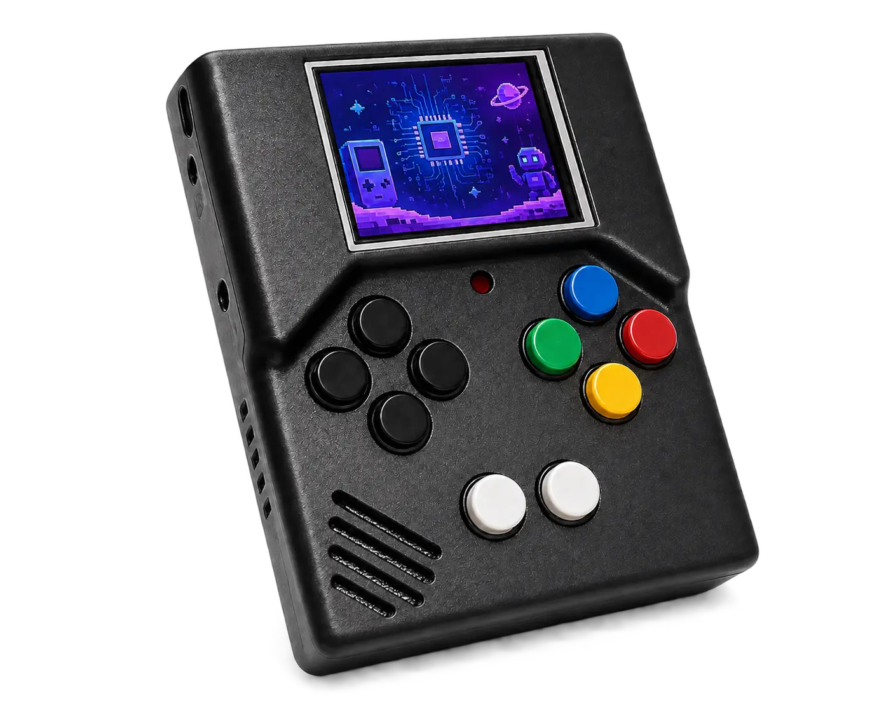

Aprenda quando importa
Conceitos técnicos aparecem no momento exato em que ajudam você a montar, testar ou corrigir.
● CONSTRUA ALGO DE VERDADE
Um console portátil que nasce nas suas mãos. Monte seis sistemas, descubra como cada parte funciona e jogue no videogame que você mesmo criou.
missões conectadas
do primeiro LED ao primeiro jogo

ESP32-S36 sistemasfeito por vocêNÃO É SÓ UM KIT
Na V1A, pinos e conectores chegam soldados. Você identifica, encaixa e testa cada módulo — entendendo a função de cada parte.
Conceitos técnicos aparecem no momento exato em que ajudam você a montar, testar ou corrigir.
Cada bloco termina com um teste real: luz, comando, imagem, som ou memória.
Módulos substituíveis e arquitetura aberta para explorar, modificar e criar depois da montagem.
SUA JORNADA
Você avança sistema por sistema. Em cada etapa, prepara, monta, valida e conquista uma nova função.
PRONTO PARA COMEÇAR?
O manual acompanha você em cada decisão, com verificações claras antes de energizar o circuito.
Começar pelo manual →